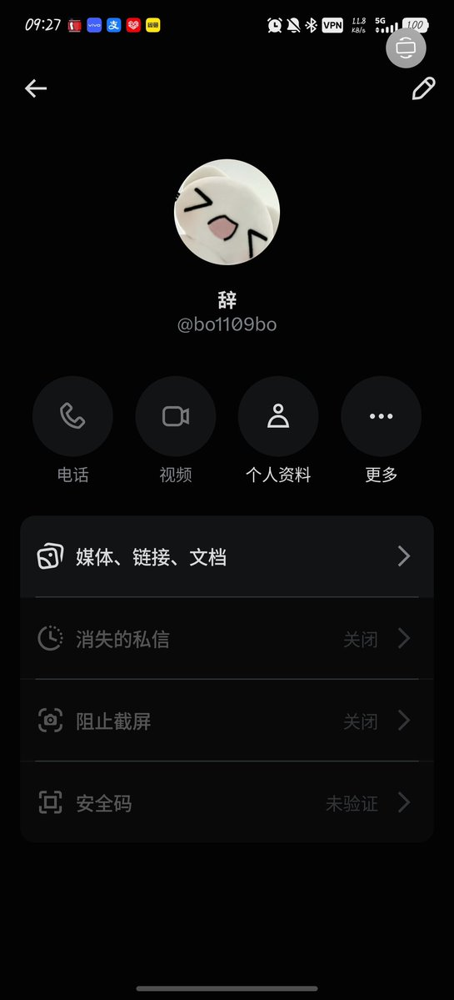

Jahseh
@godspeedyou50
又又又又是一个我挂防骗的人啊 可惜我嫌丢人都把挂他的帖子删了
他卖那玩意本来就挺贵 利润空间一倍也不值得啊 能有多少处方量和药品库存…
整不好是医生说我看你生龙活虎我不给你开药了，客户的钱又祸害光了 反正都长长脑吧
纳闷 我咋没生意呢？

滯⁶
@xiaozhi_0801
麻煩大家幫忙轉發一下哦！！這個人拿了我330元然後賣給我一個被封鎖的賬號呵呵呵！！一直在給我推銷垃圾複方阿片然後還說買三送一就這樣騙我這個磕藥藥的善良女孩吧 https://t.co/RhgrmpdCRZ